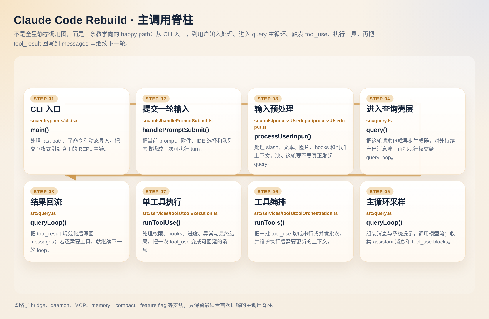

参考来源与版本锚定
本页正文由本站独立撰写，用于给 ccsource/claude-code-main 与本站 S/D 讲义建立一张中文结构地图。
技术权威：以本仓库 ccsource/claude-code-main 与 Source Map 源码课（S01–S12 / D01–D12）为准；你本机安装的官方 CLI 版本可能与本镜像不一致，请结合 发版监督 核对。
镜像锚定（维护者更新 ccsource 后请修订）：commit 81b88b8，整理日期 2026-04-07。
01 · 智能体主循环
从终端或管道读入用户消息 → 模型在可用工具集上推理 → 若需执行工具则宿主运行并把 tool_result 写回对话 → 直到模型不再发起 tool_use 或会话结束。消息顺序、并行工具与流中断恢复等细节见深挖页。
下方为讲解型步进演示（数据来自 site/data/cc-loop-steps.json）：可点步骤标签、播放/暂停、倍速与键盘 ← →、Space（点播放后也会自动聚焦面板）。步骤条下方彩色细条为下一帧倒计时；末步点播放会先回到第 1 步再自动翻页。meta.loop_autoplay 为 true 时会在末步后接回第 1 步。系统开启减少动态效果时会拉长间隔并弱化动效。非真实运行时遥测。
实时事件流（实验）：静态页不连接本机 Claude Code；协议见 projects/cc-loop-live/README.md；NDJSON：python3 tools/cc_loop_relay_demo.py；本机 SSE 联调：Loop 实验室页 + python3 tools/cc_loop_sse_relay.py。
如果你想把“页面里的 11 步讲解”对回 ccsource/CC/claude-code-rebuild 的真实代码，这里再给一张主调用脊柱图。它只保留最适合首次阅读的 happy path：从 CLI 入口、处理输入、进入 queryLoop()，到拿到 tool_use、执行工具并把 tool_result 回写。不是全量静态调用图，也不展开 bridge / daemon / MCP / compact 等支线。

main() → handlePromptSubmit() → processUserInput() → query() / queryLoop() → runTools() → runToolUse() → 结果回流。适合定位“这一轮到底先后经过了哪些层”。- S01 · Agent Loop（主线概念）
- D01 · Agent Loop 深挖（状态机、边界）
- OH01（OpenHarness 对照实现）
02 · 架构导览（目录心智模型）
阅读 ccsource/claude-code-main 时可按职能分区，不必从根目录线性扫文件。下列与常见顶层目录对应关系为教学用归纳，实际以当前 tree 为准。
Treemap 为双层：先按教学分区聚块，再细分各子目录；可单击分区下钻、用顶部面包屑返回。数据由 tools/gen_cc_arch_treemap.py 写入 site/data/cc-arch-treemap.json。
| 分区 | 典型内容 | 本站延伸 |
|---|---|---|
| 工具与命令 | tools/、commands/ | S02、S04 |
| 核心处理 | 查询引擎、会话、压缩等服务 | S01、S05 |
| UI 层 | Ink 组件、REPL 界面 | 手册与 S11 Vim |
| 桥接与集成 | bridge/、IDE 相关 | S09 |
| 基础设施 | utils/、常量、Hooks | S10、手册 |
02B · 知识图谱（块内结构 + 块间联系）
Treemap 适合看规模，知识图谱更适合看关系。这里把目录分成两种阅读方式：块内结构看每个教学分区下面挂了哪些主目录；块间联系看 UI、服务、工具、命令、桥接与基础设施之间如何互相牵动。
图谱里块内结构来自目录树统计；块间联系是教学向归纳，不是静态 import 图。它的作用是帮助你判断“先看哪里、再看哪里、哪些目录要一起看”。
03 · 工具系统（分组地图）
内置工具可按职能分组理解；下列为代表名称，完整清单请在源码 tools/ 内检索或在运行时使用官方文档。
| 分组 | 代表工具 | 讲义 |
|---|---|---|
| 文件 | Read、Edit、Write、Glob、Grep、NotebookEdit | S02 · D02 |
| 执行 | Bash、PowerShell、REPL | S02 |
| 检索与网页 | WebSearch、WebFetch、ToolSearch 等 | S02 |
| Agent / 任务 | Agent、TaskCreate、TaskGet、TaskList… | S06 · S08 |
| 规划与工作树 | EnterPlanMode、EnterWorktree、VerifyPlanExecution 等 | S06 |
| MCP | mcpList、McpResources、McpAuth… | S07 · D07 |
04 · 斜杠命令目录
以 / 开头的命令用于配置、会话管理、Git、诊断与实验能力。下表为场景分组 + 示例，条目以当前版本为准。
| 场景 | 示例（节选） | 讲义 |
|---|---|---|
| 初始化与配置 | /init、/config、/mcp、/hooks | S04 |
| 日常工作流 | /compact、/memory、/resume、/vim | S04 · S05 |
| 代码审查与 Git | /review、/commit、/diff | S04 · S12 |
| 诊断 | /cost、/usage、/doctor、/release-notes | S04 · 发版监督 |
| 实验性 | 各版本可能增减；见官方 changelog | D04 深挖 |
表与命令 pill、工具砖墙、特性卡片数据来自 site/data/cc-overview.json（更新日期 2026-04-04）；改表请运行 python3 tools/gen_cc_overview.py；改交互块请编辑 command_pills、tool_tiles、feature_cards。
05 · 实验与「代码中存在」的特性
仓库内可能出现特性开关、环境变量门槛或未默认开启的能力（社区站点常概括为 Buddy、Kairos、UltraPlan、Coordinator、远程 Bridge、Daemon、会话间通信等）。是否在你安装的版本中可用，以官方发布说明为准；此处仅帮助读源码时「知道该搜什么关键词」。
延伸阅读
Claude Code Unpacked · DeepWiki（英文） · 本站 Awesome 源码汇总（GitHub MD）